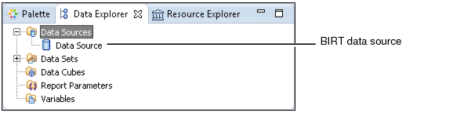

To access data for a BIRT report, you create and use a BIRT data source. A BIRT data source is an object that contains the information to connect to an underlying data source. Each type of data source requires different connection information. Use Data Explorer, shown in Figure 2-1, to create and manage BIRT data sources.

You can create as many data sources as is necessary for a report. The data sources can be of different types. For example, a report can use data from a database and data from a flat file repository.